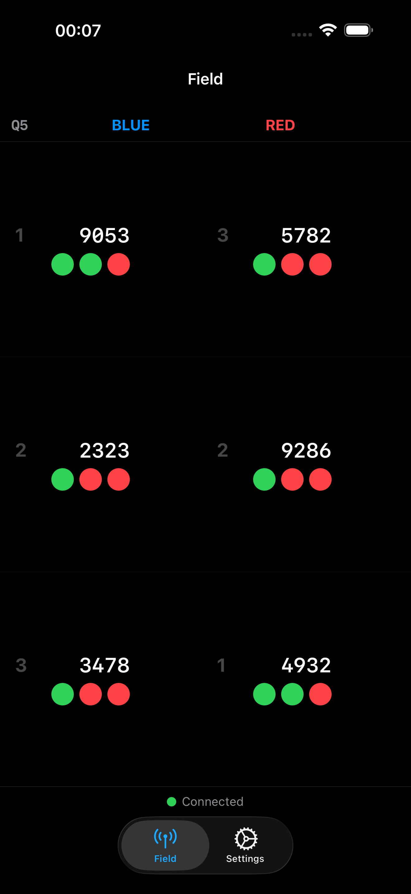
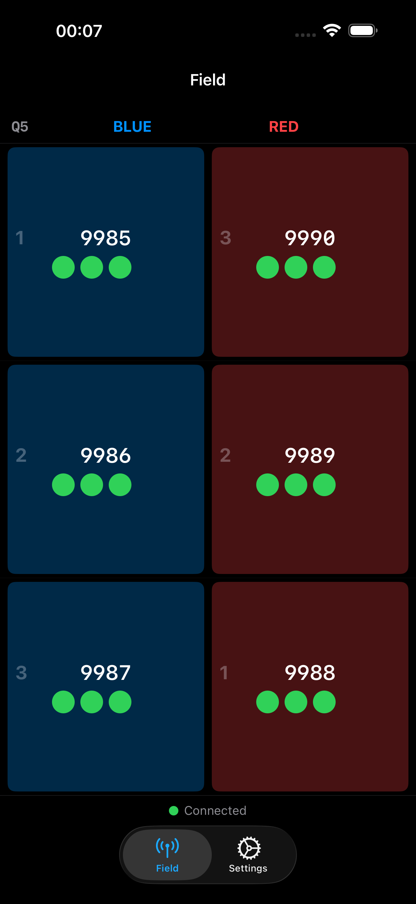
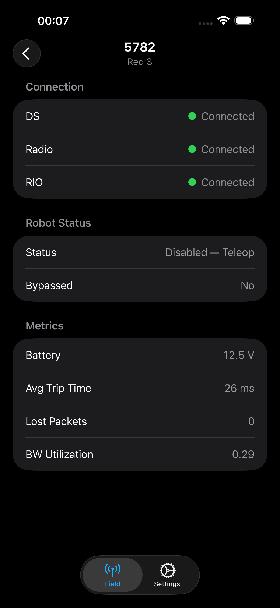
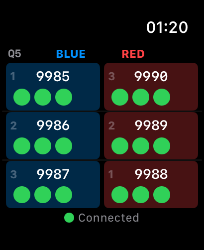

Connect directly to FMS over your local network and see DS, Radio, and RIO link status for all six robot stations in real time — no browser, no laptop required.

Field grid — at a glance status for all 6 stations
Teleop enabled — highlighted alliance cells
Tap any station for full diagnostics
Apple Watch — wrist-glance field monitorAll 6 robot stations with DS, Radio, and RIO connectivity indicators updated in real time from FMS.
Tap any station for battery voltage, average trip time, lost packets, bandwidth utilization, and robot mode.
Wrist-glance field monitor with haptic feedback when the field goes green.
At-a-glance match status on the lock screen and Dynamic Island without opening the app.
Track match pacing versus your scheduled queue time directly in the field view.
Dark, light, and system modes synced between iPhone and Watch so everything matches your preference.
Don't have access to a real Field Management System? Use the open-source FMS simulator to test MatchWatch locally. It implements the full FMS SignalR WebSocket API including field monitor data, robot state, and match flow.
View on GitHubImportant: MatchWatch is an unofficial tool and is not affiliated with or endorsed by FIRST. It is not currently permitted for use at official FRC events. This app is intended for use by trained FTAs at practice events and offseason competitions only.